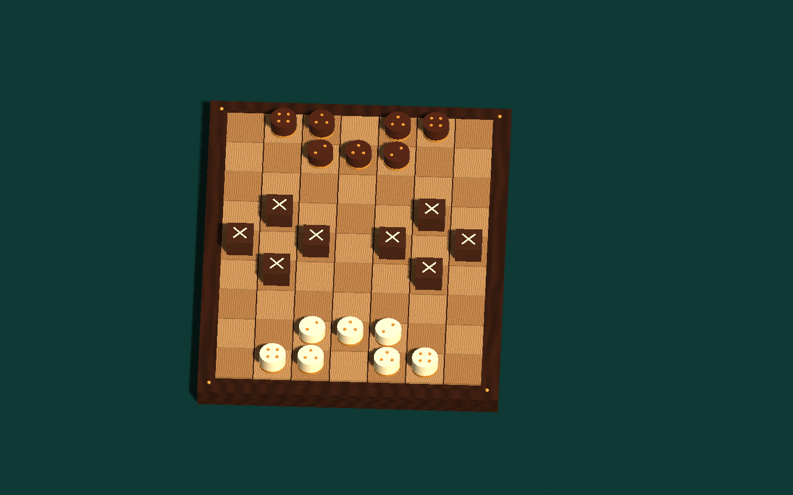

Wähle dein Duell.
Spiele gegen die KI oder teile das Brett mit einer zweiten Person. Die KI bietet die Stufen Anfänger und Taktisch.
EIN BRETT. ZWEI KÖPFE. NEUE WEGE.
Vorausdenken. Wege öffnen. Den anderen überraschen. Dein nächstes Duell beginnt direkt hier im Browser.

Gegen die KI oder zu zweit an einem Bildschirm.
Das Spiel wird geladen. Beim ersten Mal dauert es einen Moment.
0 %DIE IDEE IST EINFACH.
Die Barragoons verändern die Wege auf dem Brett. Nutze sie, um deine Figuren voranzubringen und die andere Seite auszubremsen.
Spiele gegen die KI oder teile das Brett mit einer zweiten Person. Die KI bietet die Stufen Anfänger und Taktisch.
Die goldenen Punkte zeigen die Zugweite deiner Figur. Die Symbole auf den Barragoons bestimmen, welche Wege offen sind. Gültige Ziele werden markiert.
Beim Platzieren wählst du Symbol, Drehung und Feld. Prüfe die Vorschau und bestätige. Gewinne, wenn die andere Seite keine Figur oder keinen legalen Zug mehr hat.
Die ausführliche Spielhilfe findest du unter „Regeln“ im Spiel. Der Prototyp bildet noch nicht alle Turnier-Sonderfälle ab.
Kein Download, keine Installation. Musik und Lautstärke stellst du im Spiel ein. Deine Toneinstellungen werden auf diesem Gerät gespeichert.